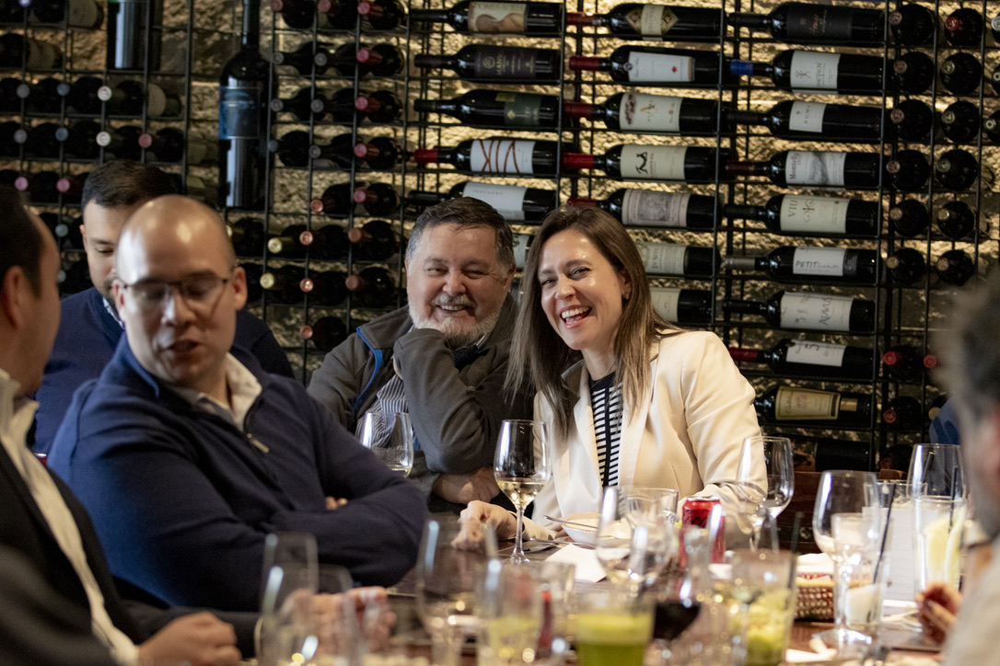
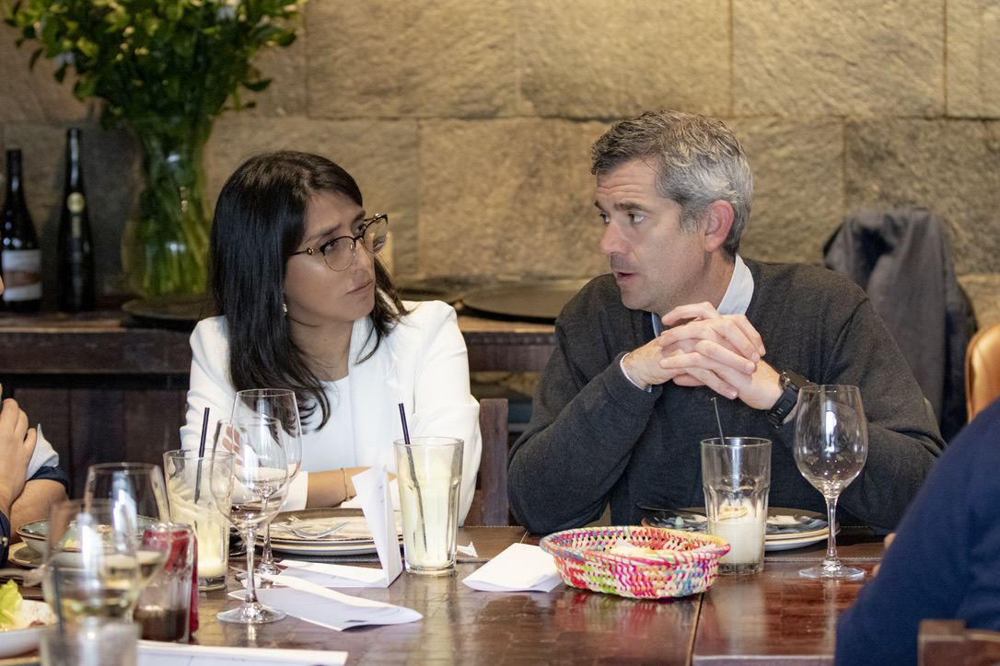
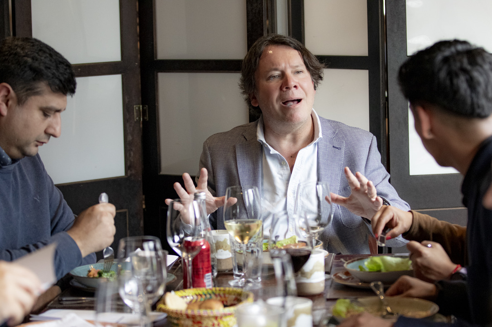
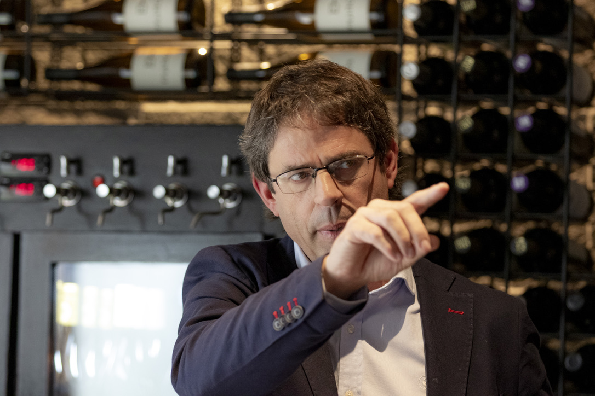
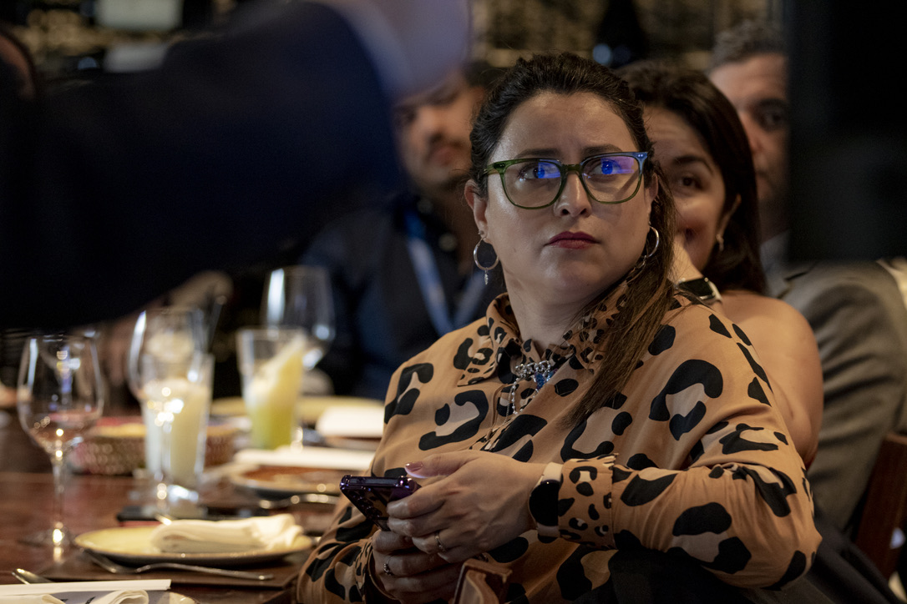
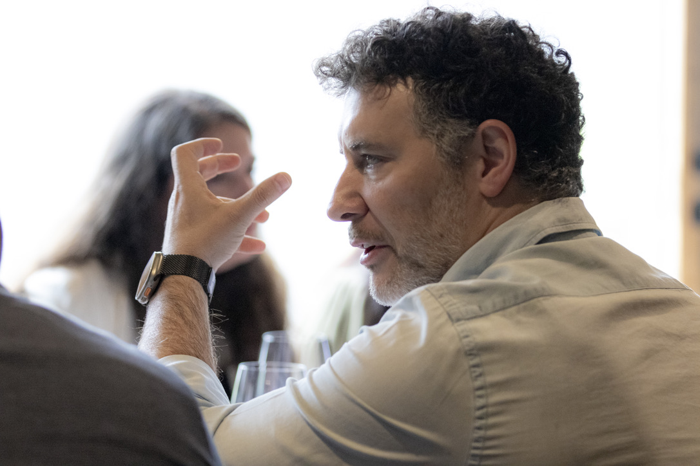
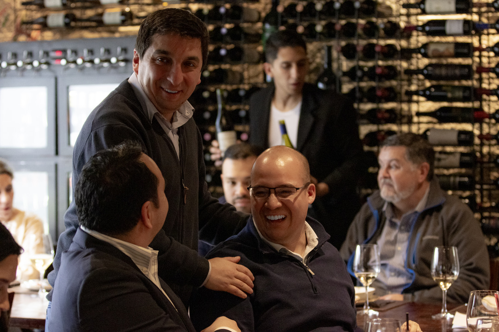
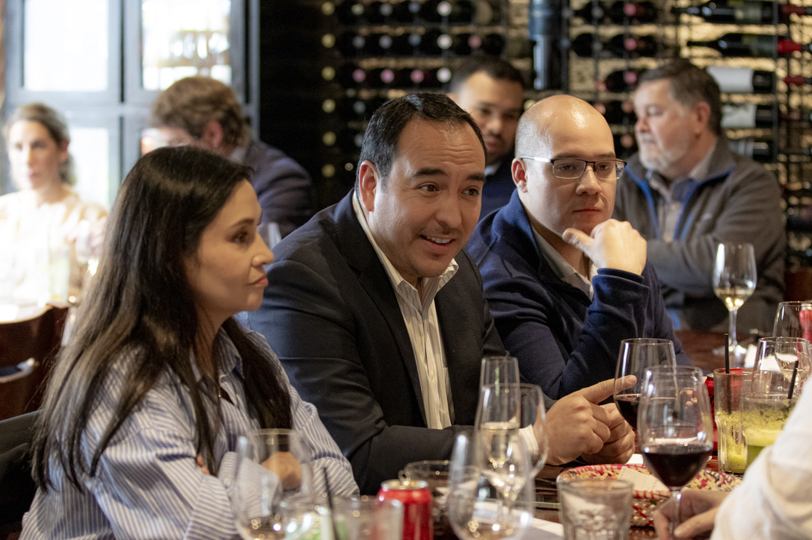
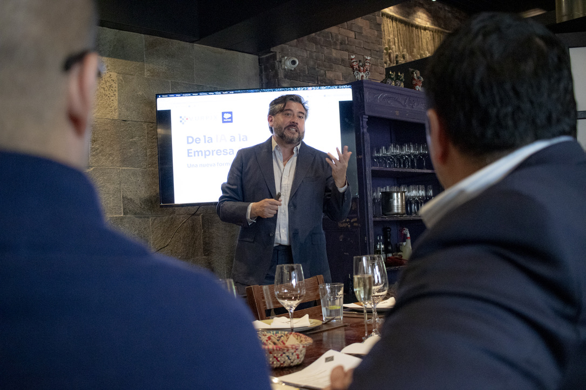
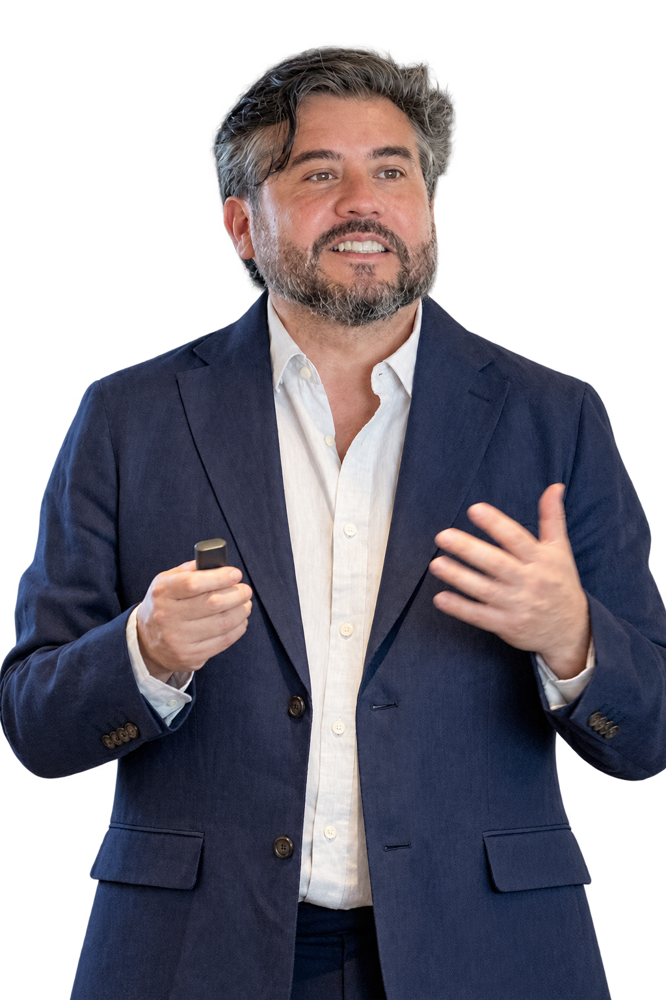

Personas y agentes
Colaboración que amplía las capacidades de los equipos y permite nuevas formas de trabajar.
Un encuentro para compartir miradas, experiencias y desafíos sobre cómo las personas, los datos y los agentes están transformando los negocios.
Restaurante Panchita · Santiago, Chile
Revive el encuentro · Reproduce el video aquí.
Las mejores ideas nacen cuando compartimos experiencias, preguntas y nuevas perspectivas.








Descarga las fotografías con el PIN enviado a los asistentes.
Enlace privado pendiente de configurar.
El desafío no es incorporar inteligencia artificial de forma aislada, sino construir capacidades conectadas con el negocio.
Colaboración que amplía las capacidades de los equipos y permite nuevas formas de trabajar.
Información confiable, integración y procesos conectados para actuar sobre la realidad de cada empresa.
Pasar de iniciativas puntuales a capacidades que mejoran experiencias y resultados concretos.
Ponemos a tu disposición la presentación del almuerzo para revisar los conceptos y seguir explorando posibilidades.
Ver presentación (PDF)PDF pendiente de incorporar.


Cada organización tiene desafíos distintos. Nos encantaría seguir explorando cómo conectar personas, procesos, datos y agentes para crear nuevas oportunidades.
Agenda una reuniónEnlace de contacto pendiente.